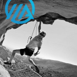
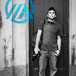

- 256
Activists - $14,036
Pledged - 52
Charities
Thank You,
To all the Activists, the supporters, the accountabilibuddies and the friends and family who helped us bring Activist to life. Your support was crucial to the realization of a platform that helped to motivate dozens of Activists and to raise thousands of dollars for important causes.
Unfortunately, big projects require serious time investments, and Activist deserves more than a few hours a week, even from a passionate team. The impacts we made in a short time were real, and we proved that people striving for something bigger than themselves really do stay motivated.
If you are working towards a fitness goal, use the Activist tools: tell a friend, and ask them to help hold you accountable; put your money where your mouth is - bet on yourself; and make it bigger than yourself by working for a cause.
If you are looking for resources for fitness motivation or for charitable giving, we can wholeheartedly recommend the following organizations that were important to our Activists and supported us along the way:
Until later,
Matt, Alex, Nick and Chris
